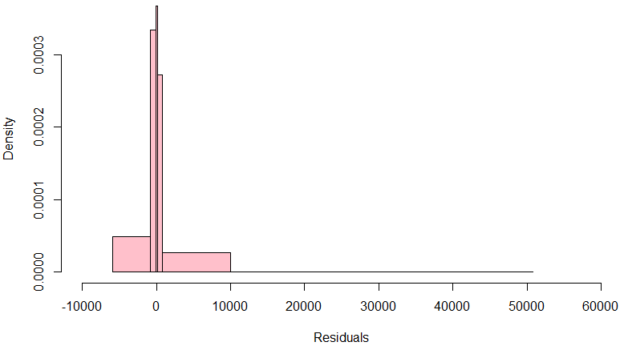

机器学习-回归¶
线性回归
Python 代码
R 代码
# Import 相关的库
# 引入相关库 library()
# 获取数据集（训练集、验证集、测试集）
# 获取数据集（训练集、验证集、测试集）
# 确定特征变量与应变量
# 确定特征变量与应变量
# 值必须是数值型
# 值必须是数值型
from sklearn import linear_model
x_train = input_variables_values_training_datasets
x_train <- input_variables_values_training_datasets
y_train = target_variables_values_training_datasets
y_train <- target_variables_values_training_datasets
x_test = input_variables_values_test_datasets
x_test <- input_variables_values_test_datasets
# 创建线性回归对象
linear = linear_model.LinearRegression()
x<- cbind(x_train, y_train)
# 利用训练集训练模型
# 利用训练集训练模型
# 检查分数
# 检查分数
linear.fit(x_train, y_train)
linear <- lm(y_train ~ ., data = x)
linear.score(x_train, y_train)
summary(linear)
# 预测输出
# 预测输出
predicted = linear.predict(x_test)
predicted = predict(linear, x_test)
# 读取丰田车数据
car.df <- read.csv("D://Books//bap//ToyotaCorolla.csv")
head(car.df)
dim(car.df)
# 查看行记录数
dim(car.df[,1])
dim(car.df)[1]
length(car.df[,1])
# 取1000条记录
car.df1k <- car.df[1:1000,]
head(car.df1k)
dim(car.df1k)
# 查看列名
colnames(car.df1k)
t(t(colnames(car.df1k)))
# 去相应的列
selected.var <- c(3,4,7,8,9,10,12,13,14,17,18)
# 设置种子
set.seed(2)
# 随机采样取600条记录
train.index <- sample(c(1:1000), 600)
head(train.index)
# 设定训练集与验证集
train.df1k <- car.df1k[train.index, selected.var]
head(train.df1k)
valid.df1k <- car.df1k[-train.index, selected.var]
# 线性回归模型lm算法来分析价格与各列的关系
car.lm <- lm(Price ~., data = train.df1k)
summary(car.lm)
# options scipen取消科学计数法
options(scipen = 999)
summary(car.lm)
# 加载预测包
library(forecast)
install.packages("forecast")
library(forecast)
summary(car.lm)
car.lm.pred <- predict(car.lm, valid.df1k)
options(scipen=999, digits = 0)
?options
accuracy(car.lm.pred, valid.df1k$Price)
head(car.lm.pred[1:20])
colnames(car.lm.pred)
summary(car.lm.pred)
car.lm.pred
# 生成预测值与实际值的数据框
x <- data.frame("Predicted" = car.lm.pred[1:20], "Actual_Price" = valid.df1k$Price[1:20])
x['Residual'] <- x['Actual_Price'] - x['Predicted']
# 残差计算
all.residuals <- valid.df1k$Price - car.lm.pred
# 预览直方图
hist(all.residuals, breaks=200, xlab="Residuals", main = "")
# 根据summary(car.lm.pred)数据设置breaks
breaks = c(-5900,-800,0,100,800,50000)
# xlim - 设置横坐标, freq=T为频数，FALSE为密度面积 参考下图
hist(all.residuals, breaks=breaks, xlab="Residuals", freq = FALSE, main = "", col = "pink", xlim = c(-10000,60000))
hist(all.residuals, breaks=breaks, xlab="Residuals", freq = TRUE, main = "", col = "pink", xlim = c(-10000,60000))
# 使用regsubsets()来执行穷尽搜索
# 类别预测因子必须要手工转换成虚拟变量
library(leaps)
head(car.df1k)
# 创建Fule_type的虚拟变量
Fuel_Type <- as.data.frame(model.matrix( ~ 0 + Fuel_Type, car.df1k))
head(Fuel_Type)
# 使用3个虚拟变量列替换Fuel_Type列
train.car.df1k <- cbind(car.df1k[, -4], Fuel_Type)
head(train.car.df1k)
> search <- regsubsets(Price ~ ., data = train.car.df1k, nbest = 1, nvmax = dim(train.car.df1k)[2], method = 'exhaustive', really.big = TRUE)
Reordering variables and trying again:
# 运行时间超长。不适合使用R在本地服务器执行穷尽搜索
下图为残差密度直方图：
预测因子（变量）选择 线性回归中预测因子选择非常重要，直接决定了模型的正确性。减少自变量（预测因子）的数量有两种方法： 1. 穷尽搜索Exhaustive Search：不建议在R中使用，效率极低，速度极慢 2. 共有三种流行的迭代搜索算法：前向选择forward selection，后向评估backward elimination，逐步回归stepwise regression
# 使用step()运行逐步回归
# set directions = "forward" "backward" "both"
car.lm.step.both <- step(car.lm, direction = "both")
summary(car.lm.step.both)
# 检查哪一个变量应该删除，此统计结果给出了需要保留的六个特征
Call:
## 如下是重点
lm(formula = Price ~ Age_08_04 + KM + Fuel_Type + HP + Quarterly_Tax +
Weight, data = train.df1k)
Residuals:
Min 1Q Median 3Q Max
-8959.9 -833.1 -16.8 835.3 5058.9
# 其他逐步回归方法结果
car.lm.step.forward <- step(car.lm, direction = "forward")
summary(car.lm.step.forward)
car.lm.step.backward <- step(car.lm, direction = "backward")
summary(car.lm.step.backward)
# 线性模型准确性检查，对比不同模型的ME, RMSE, MAE, MPE, MAPE值
# 根据选择的6特征变量的模型来预测验证，检查模型预测的准确性
car.lm.step.pred <- predict(car.lm.step.both, valid.df1k)
> accuracy(car.lm.step.pred, valid.df1k$Price)
ME RMSE MAE MPE MAPE
Test set 59.26886 1334.978 1024.979 -0.4212544 9.357492